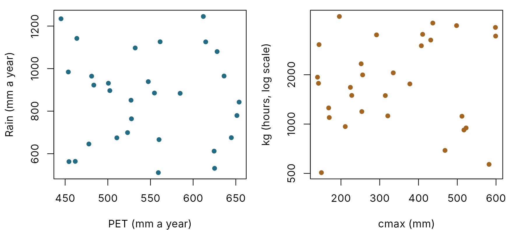
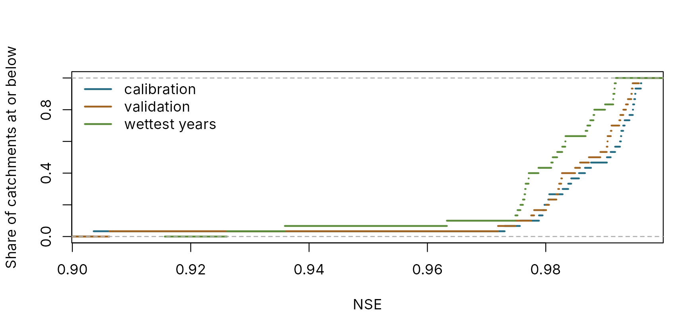
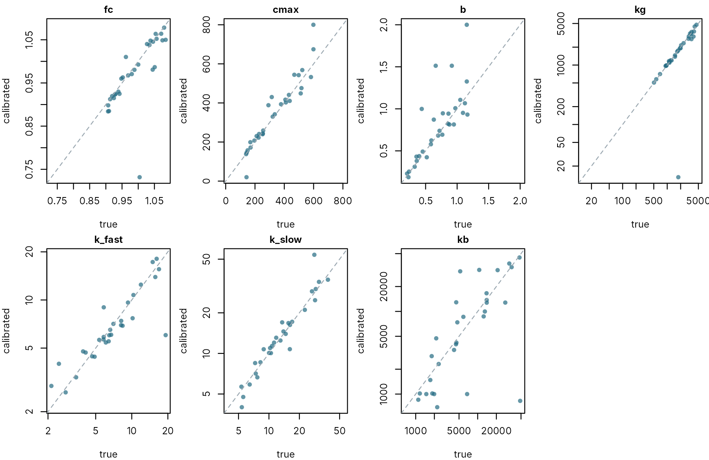
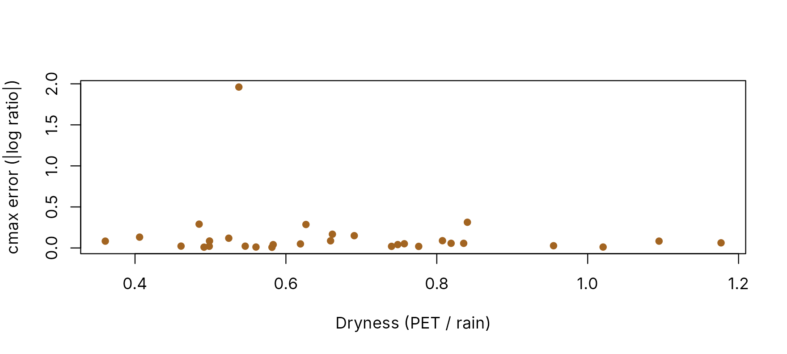
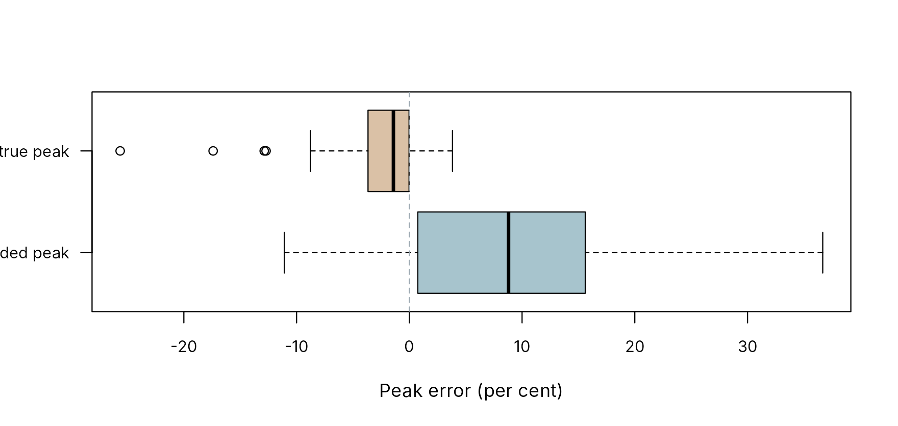

A large sample: what automatic calibration recovers
pdmS7 documentation
Source:vignettes/large-sample.Rmd
large-sample.RmdLarge-sample hydrology studies a method over many catchments at once, so that a pattern is not mistaken for the quirk of one river. Its weakness is that the truth is never known: a calibration that scores well may still have the wrong parameters, and nothing in the record says so.
A large sample of synthetic catchments removes that weakness. Every catchment has its own climate and its own true model, every truth is written down, and the same automatic calibration a real study would use is run over all of them. This article does that for 30 catchments and asks three questions:
- How well does automatic calibration fit, on data it saw and data it did not?
- Which parameters does it recover, and which does it not?
- What decides whether a parameter can be recovered?
The sample
synthetic_basins() writes one folder per catchment, in
the layout calibrate_batch() reads. Each catchment draws
its own climate (how wet, how stormy, how much evaporation) and its own
true parameters, within the calibration bounds. Each record is ten years
of daily data, gauged with persistent error and an extrapolated rating
above its highest gauging.
basins <- file.path(tempdir(), "sample-basins")
output <- file.path(tempdir(), "sample-projects")
unlink(c(basins, output), recursive = TRUE)
sample <- synthetic_basins(basins, n = 30, years = 10, dt = 24, seed = 7)
round(sapply(sample[, c("area_km2", "rain_mm", "pet_mm", "cmax", "kg", "k1", "kb")],
range), 1)
#> area_km2 rain_mm pet_mm cmax kg k1 kb
#> [1,] 10.5 510.9 445.1 139.5 505.4 2.1 1100.4
#> [2,] 482.4 1245.1 653.9 598.9 4533.3 19.2 48444.9
par(mfrow = c(1, 2), mar = c(4, 4.2, 0.8, 0.8))
plot(sample$pet_mm, sample$rain_mm, pch = 16, col = pal[2], xlab = "PET (mm a year)",
ylab = "Rain (mm a year)")
plot(sample$cmax, sample$kg, log = "y", pch = 16, col = pal[3], xlab = "cmax (mm)",
ylab = "kg (hours, log scale)")
The sample’s climates and catchments. Left: annual rain against potential evaporation. Right: soil capacity against recharge time constant. Each point is one catchment.
The sample spans rain from 511 to 1245 mm a year, areas from 11 to 482 km2, and soil capacities from 139 to 599 mm. Climate and catchment are drawn independently, as they would not be in nature, so that their effects can be told apart.
Calibrating all of them
One call calibrates the whole sample: staged automatic calibration from the standard preset, two starts per stage, in parallel workers. Each record’s two wettest years are held back and revealed at the end by the test, as every project does by default.
# R CMD check allows two processes; elsewhere use up to four cores. The results do not depend
# on the number: each basin's random starts are seeded from its name.
limited <- identical(toupper(Sys.getenv("_R_CHECK_LIMIT_CORES_")), "TRUE")
cores <- if (limited) 2L else min(4L, max(1L, parallel::detectCores() - 1L))
elapsed <- system.time(
calibrate_batch(basins, output, staged = TRUE, starts = 2, control = list(maxit = 40),
cores = cores, test = TRUE)
)[["elapsed"]]
status <- batch_status(output)
table(status$state)
#>
#> done
#> 30
results <- batch_results(output)All 30 catchments finished, in 10 minutes on 3 cores. A sample of
hundreds takes the same call; calibrate_batch() resumes
where it stopped if interrupted. Calibrating many catchments covers
running it for real.
How well does it fit?
scores <- list(calibration = results$candidate_score, validation = results$validation_score,
`wettest years` = results$wettest_score)
plot(NA, xlim = range(unlist(scores), na.rm = TRUE), ylim = c(0, 1), xlab = "NSE",
ylab = "Share of catchments at or below")
for (i in seq_along(scores)) {
lines(stats::ecdf(scores[[i]]), col = pal[i + 1], lwd = 2, do.points = FALSE)
}
legend("topleft", names(scores), col = pal[2:4], lwd = 2, bty = "n")
The share of catchments reaching each score, on the calibration window, the validation window and the held-back wettest years.
round(sapply(scores, stats::quantile, c(0.1, 0.5, 0.9), na.rm = TRUE), 3)
#> calibration validation wettest years
#> 10% 0.979 0.977 0.974
#> 50% 0.991 0.988 0.982
#> 90% 0.995 0.994 0.991The median catchment scores 0.991 on calibration, 0.988 on validation and 0.982 on the held-back wettest years. By the usual standard every one of these is an excellent fit. The weakest on validation is S027, at 0.906. If scores were the whole story, this would be the end of the article.
Which parameters does it recover?
Every calibrated value can be set against its truth. The two surface stores of a cascade can swap without changing the flow, so they are compared as the faster and the slower of the pair.
fitted_config <- function(id) {
project <- file.path(output, id)
read_entry(project, read_projects(project)$candidate)$configuration
}
values <- function(cfg) {
k <- sort(c(cfg$surface$k1, cfg$surface$k2))
c(fc = cfg$fc, cmax = cfg$distribution$cmax, b = cfg$distribution$b,
kg = cfg$recharge$kg, k_fast = k[1], k_slow = k[2], kb = cfg$groundwater$kb)
}
truth <- t(vapply(sample$basin, function(id) {
values(read_pdm_config(file.path(basins, id, "truth.yml")))
}, numeric(7)))
fitted <- t(vapply(sample$basin, function(id) values(fitted_config(id)), numeric(7)))
# The typical error is the median, across catchments, of the size of the error as a factor:
# 0.1 means the fitted value is typically about 10 per cent off, either way.
typical <- apply(abs(log(fitted / truth)), 2, stats::median)
data.frame(parameter = names(typical), typical_error = round(exp(typical) - 1, 3),
within_10_percent = colSums(abs(log(fitted / truth)) < log(1.1)),
row.names = NULL)
#> parameter typical_error within_10_percent
#> 1 fc 0.010 29
#> 2 cmax 0.058 22
#> 3 b 0.103 14
#> 4 kg 0.029 27
#> 5 k_fast 0.110 13
#> 6 k_slow 0.077 20
#> 7 kb 0.449 6
logged <- c("kg", "k_fast", "k_slow", "kb")
par(mfrow = c(2, 4), mar = c(4, 4, 1.6, 0.6), cex.main = 1)
for (p in colnames(truth)) {
lim <- range(c(truth[, p], fitted[, p]))
plot(truth[, p], fitted[, p], log = if (p %in% logged) "xy" else "", xlim = lim, ylim = lim,
pch = 16, col = adjustcolor(pal[2], 0.7), xlab = "true", ylab = "calibrated", main = p)
abline(0, 1, col = pal[7], lty = 2, untf = TRUE)
}
Calibrated against true values, one point per catchment. Points on the line are exact. Log scales for the parameters that span orders of magnitude.
The points far from the line belong mostly to 3 catchments (S017, S021, S027) whose search ended with a parameter against a bound, a sign of a calibration that went astray rather than of a parameter that cannot be known. Nothing in the batch flags them yet, so check for them as this article does; in a real study they are the first catchments to look at.
The ranking is clear. fc and kg come back closest, typically within 1 and 3 per cent. kb and k_fast are the worst, typically 45 and 11 per cent out. Yet the calibrations that got them wrong still score an excellent NSE. A good score shows that the model reproduces the record; it does not show that the parameters are right.
What decides whether a parameter can be recovered?
A parameter can be recovered only if the record exercises it. A natural guess is that the soil capacity is pinned best where the climate works the soil hardest: in a dry climate the soil fills and empties far enough for its size to show, while in a wet one many capacities fit the record equally well. A simple measure of how hard the climate works the soil is its dryness, potential evaporation over rain. The sample can test the guess.
dryness <- sample$pet_mm / sample$rain_mm
cmax_error <- abs(log(fitted[, "cmax"] / truth[, "cmax"]))
plot(dryness, cmax_error, pch = 16, col = pal[3], xlab = "Dryness (PET / rain)",
ylab = "cmax error (|log ratio|)")
The error in each catchment’s calibrated soil capacity against the dryness of its climate.
Across this sample, dryness alone does not explain how well the soil capacity is recovered (Spearman correlation -0.03): other things, such as how the parameters trade off against each other, matter as much. A real large-sample study can ask the same question of its own results, but cannot see the error itself; here it can.
The largest floods
The test also revealed each record’s two wettest years. Their peaks are above the highest gauging, where the rating records them low, so the recorded peak is not the truth. Here the true peak is known.
peak_rows <- lapply(sample$basin, function(id) {
project <- file.path(output, id)
entries <- read_project(project)$entries
test <- read_entry(project, utils::tail(entries$id[entries$type == "test"], 1))
forcing <- data.table::fread(file.path(basins, id, "forcing.csv"))
forcing$time <- as.POSIXct(forcing$time, format = "%Y-%m-%dT%H:%M:%SZ", tz = "UTC")
true_flow <- synthetic_catchment(forcing, read_pdm_config(file.path(basins, id, "truth.yml")),
error = list(sd = 0, memory_h = 72))$true_flow
reg <- read_entry(project, entries$id[entries$type == "data_registered"][1])
do.call(rbind, lapply(seq_along(test$wettest$years), function(i) {
y <- test$wettest$years[[i]]
span <- reg$scorecard$wettest$years[[i]]
data.frame(basin = id, recorded = y$observed_peak_m3s, calibrated = y$simulated_peak_m3s,
true = max(true_flow[span$first_row:span$last_row]),
low = y$spread_low_m3s, high = y$spread_high_m3s)
}))
})
peaks <- do.call(rbind, peak_rows)
vs_recorded <- peaks$calibrated / peaks$recorded - 1
vs_true <- peaks$calibrated / peaks$true - 1
round(c(median_error_vs_recorded = stats::median(vs_recorded),
median_error_vs_true = stats::median(vs_true),
median_spread = stats::median((peaks$high - peaks$low) / peaks$true),
share_true_inside_spread = mean(peaks$true >= peaks$low & peaks$true <= peaks$high)), 3)
#> median_error_vs_recorded median_error_vs_true median_spread
#> 0.088 -0.014 0.119
#> share_true_inside_spread
#> 0.767
boxplot(list(`against recorded peak` = 100 * vs_recorded, `against true peak` = 100 * vs_true),
horizontal = TRUE, col = adjustcolor(pal[2:3], 0.4), xlab = "Peak error (per cent)",
las = 1, cex.axis = 0.85)
abline(v = 0, lty = 2, col = pal[7])
Peak error in the held-back wettest years, judged against the recorded peak (which the rating understates) and against the true peak.
Judged against the recorded peaks, the calibrated models look 9 per cent high in the median year. Judged against the true peaks, they are 1 per cent low. Across the 60 held-back years, the range of the equally good fits contains the true peak in 77 per cent of them. Larger floods explains these checks for one catchment; across a sample, they show how far a method can be trusted with floods it has not seen.
What the sample shows
- Scores are not evidence of correct parameters. Every catchment scored an NSE of at least 0.91 on validation. Some parameters were still recovered poorly, and only the known truth shows it.
- Some parameters are reliably recovered and some are not. Here fc and kg were within 10 per cent in 27 or more of the 30 catchments; kb was within 10 per cent in only 6 of them. A study that reads meaning into a parameter should first know which kind it is.
- A rating extrapolated above the highest gauging makes a good model look bad on the biggest floods. Judge peak errors with the rating flag in mind.
- Simple explanations need testing. The guess that dry climates pin the soil store better was not borne out here; a large sample is where such guesses are tested.
- Large samples answer questions single catchments cannot: which parameters to trust, under which climates, and how much a calibration method can be relied on beyond its record.
For a real study, replace synthetic_basins() with real
basin folders and keep everything else. Running a synthetic sample
alongside, made to resemble the real catchments with
fit_rain() and sensible ranges, shows how far the method
can be trusted before the real results are read.